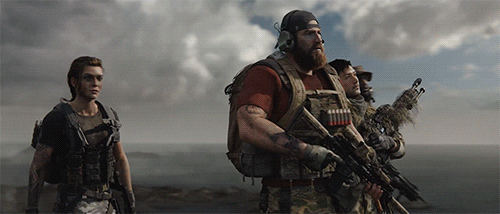

Ghost Recon: Breakpoint
Ghost Recon Wildlands was a middling open-world shooter, but it wasn’t entirely devoid of potential. With more diverse missions, a greater range of tactical gadgets and abilities, and a better thought-out story, it might have succeeded in justifying its ludicrously huge world and absurd number of activities.
As a sequel, Ghost Recon Breakpoint adds none of these things. In fact, Breakpoint adds nothing of value to the Ghost Recon template. Instead, it transplants into Wildlands’ structure several systems from other Ubisoft franchises, systems that have no place in a game like Ghost Recon. Meanwhile, it actively removes some features that were present in Wildlands, while making others considerably worse. In case I’ve not made it clear, I don’t think it’s very good.
At least the story isn’t likely to trigger a political incident, although this is mainly because it’s unlikely to trigger any spark of emotion whatsoever. Wildlands’ real-world setting of Bolivia has been switched out for the fictional island of Auroa, an offshore Silicon Valley where your friendly neighbourhood techbro Jace Skell tries to make the world a better place by building killer drones. At the game’s outset, Skell’s operation is hijacked by a former Ghost named Walker (played by Jon Bernthal), who plans to use Skell’s drone army for nonspecific Nefarious Means.
Players assume the role of Nomad (which, incidentally, also means “Walker”, suggesting the writers struggled to come up with two generic soldier names) deployed as part of a large team of Ghosts to investigate the situation on Auroa. But the Ghost’s helicopters are shot down by the island’s automated weapons system, and Nomad finds himself alone and hunted through the forest by Walker’s gang of mercenaries who call themselves the “Wolves.”
Verdict
Ghost Recon Breakpoint is a bizarre Frankenstein’s monster of a shooter, functional in a basic sense, but fundamentally at odds with every second of its own existence. The only breakpoint represented here is for Ubisoft’s carte-blanche open world design, which completely loses sight of the core experience Ghost Recon is supposed to offer. The systems borrowed from other Ubisoft games are about as fitting for a tactical shooter as a clown suit and a megaphone, while the toolbox available to the player is nowhere near deep enough to spread across the hundreds of samey activities filling the world. If Wildlands was disappointing, Breakpoint edges close to disaster.
4/10
Avaliable Platforms: PC, PS4, Xbox, Stadia
PC System Requirements:
| MINIMUM: | RECOMMENDED: | |
|---|---|---|
| OS: | 64-bit Version of Windows 7 | 64-bit Version of Windows 10 |
| CPU: | Intel i5 4460/AMD Ryzen 3 1200 | Intel i7 6700K/AMD Ryzen 5 1600 |
| Memory: | 8GB RAM | 8GB RAM |
| GPU: | Nvidia GT 960/AMD R9 280X | Nvidia GTX 1060/AMD RX 480 |
| DirectX: | Version 11 | Version 11 |
| Network: | Broadband Internet connection | Broadband Internet connection |
| Storage: | 50GB available space | 50GB available space |